Flatmap tracing review
Source image, saved anatomical outlines and scale endpoints. Unfinished fields are NA.
fig01_flying_fox — illustrative summary
Reassessed from the full source page; cortical inset crop and each field perimeter reviewed separately.
ImageJ ROIs · Calibrated TIFF
| Field | mm² | % neocortex | Status |
|---|
| MT | 5.195 | NA | provisional; anatomical review required |
| saturated primary-field totals | NA | NA | not_measurable |
fig01_macaque — illustrative summary
Reassessed from the full source page; cortical inset crop and each field perimeter reviewed separately.
ImageJ ROIs · Calibrated TIFF
| Field | mm² | % neocortex | Status |
|---|
| FST | 55.931 | NA | provisional; anatomical review required |
| R | 13.445 | NA | provisional; anatomical review required |
| DI | 100.862 | NA | provisional; anatomical review required |
| DLr | 255.925 | NA | provisional; anatomical review required |
| DLc | 346.352 | NA | provisional; anatomical review required |
| FV | 24.418 | NA | provisional; anatomical review required |
| FEF | 32.485 | NA | provisional; anatomical review required |
| SMA | 145.118 | NA | provisional; anatomical review required |
| VPP | 125.334 | NA | provisional; anatomical review required |
| 2 | 71.456 | NA | provisional; anatomical review required |
| 1 | 90.206 | NA | provisional; anatomical review required |
| VP | 171.565 | NA | provisional; anatomical review required |
| MT | 120.369 | NA | provisional; anatomical review required |
| MSTv | 42.583 | NA | provisional; anatomical review required |
| saturated primary-field totals | NA | NA | not_measurable |
fig01_marmoset — illustrative summary
20 October 2026 missing-region actions completed for this view. See documentation/missing_region_actions_2026-10-20.md for additions and remaining source limits.
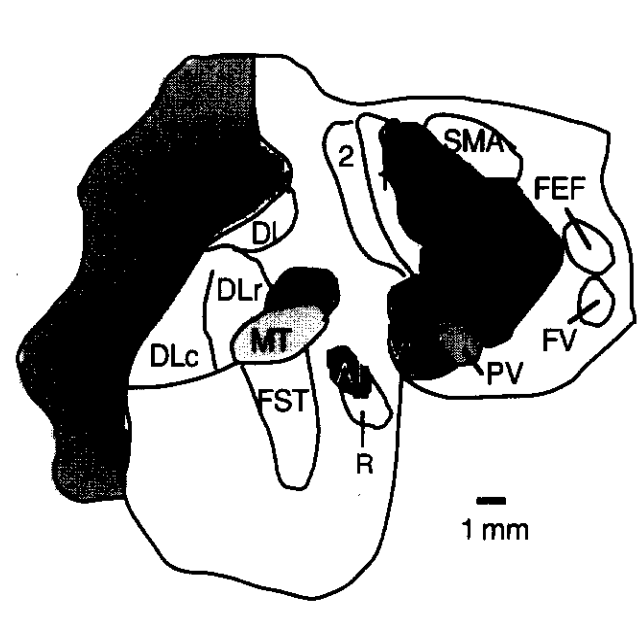

ImageJ ROIs · Calibrated TIFF
| Field | mm² | % neocortex | Status |
|---|
| MT | 5.851 | NA | provisional; anatomical review required |
| FST | 10.553 | NA | provisional; anatomical review required |
| R | 1.590 | NA | provisional; anatomical review required |
| SMA | 4.507 | NA | provisional; anatomical review required |
| FEF | 2.154 | NA | provisional; anatomical review required |
| FV | 1.439 | NA | provisional; anatomical review required |
| DI | 3.057 | NA | provisional; anatomical review required |
| DLr + DLc | 15.985 | NA | provisional; anatomical review required |
| saturated primary-field totals | NA | NA | not_measurable |
| 2 | NA | NA | not_measurable |
| DLr | NA | NA | not_measurable |
| DLc | NA | NA | not_measurable |
fig01_quoll — illustrative summary
20 October 2026 missing-region actions completed for this view. See documentation/missing_region_actions_2026-10-20.md for additions and remaining source limits.
Calibrated TIFF
| Field | mm² | % neocortex | Status |
|---|
| saturated primary-field totals | NA | NA | not_measurable |
| A | NA | NA | not_measurable |
| VIS | NA | NA | not_measurable |
| DSc | NA | NA | not_measurable |
| SII/PV | NA | NA | not_measurable |
| AUD | NA | NA | not_measurable |
| PYR | NA | NA | not_measurable |
fig01_squirrel — illustrative summary
Reassessed from the full source page; cortical inset crop and each field perimeter reviewed separately.
ImageJ ROIs · Calibrated TIFF
| Field | mm² | % neocortex | Status |
|---|
| AUD | 7.011 | NA | provisional; anatomical review required |
| R | 3.105 | NA | provisional; anatomical review required |
| TP | 11.937 | NA | provisional; anatomical review required |
| saturated primary-field totals | NA | NA | not_measurable |
| PM | NA | NA | not_measurable |
| OTc | NA | NA | not_measurable |
| OTm | NA | NA | not_measurable |
| OTr | NA | NA | not_measurable |
fig02_ghost_bat — illustrative summary
Reassessed from the full source page; cortical inset crop and each field perimeter reviewed separately.
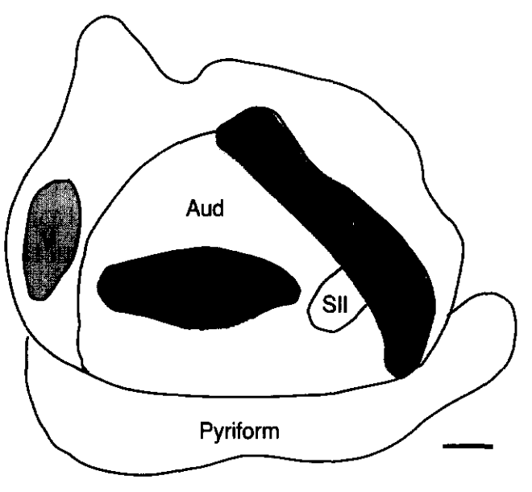
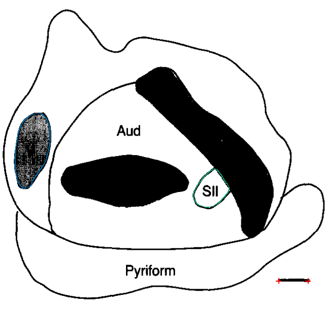
ImageJ ROIs · Calibrated TIFF
| Field | mm² | % neocortex | Status |
|---|
| SII | 1.057 | NA | provisional; anatomical review required |
| V | 2.195 | NA | provisional; anatomical review required |
| saturated primary-field totals | NA | NA | not_measurable |
fig02_platypus — illustrative summary
Reassessed from the full source page; cortical inset crop and each field perimeter reviewed separately.
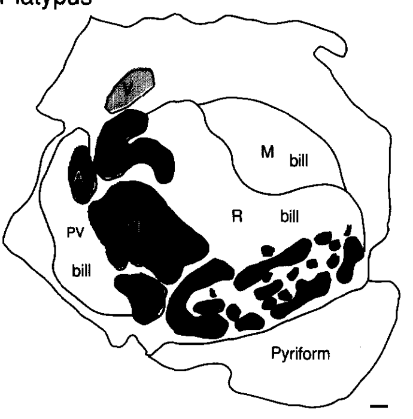
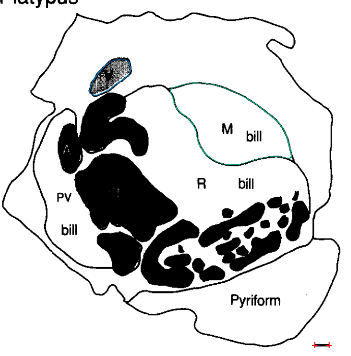
ImageJ ROIs · Calibrated TIFF
| Field | mm² | % neocortex | Status |
|---|
| M bill | 30.594 | NA | provisional; anatomical review required |
| V | 4.205 | NA | provisional; anatomical review required |
| saturated primary-field totals | NA | NA | not_measurable |
fig02_star_nosed_mole — illustrative summary
Reassessed from the full source page; cortical inset crop and each field perimeter reviewed separately.
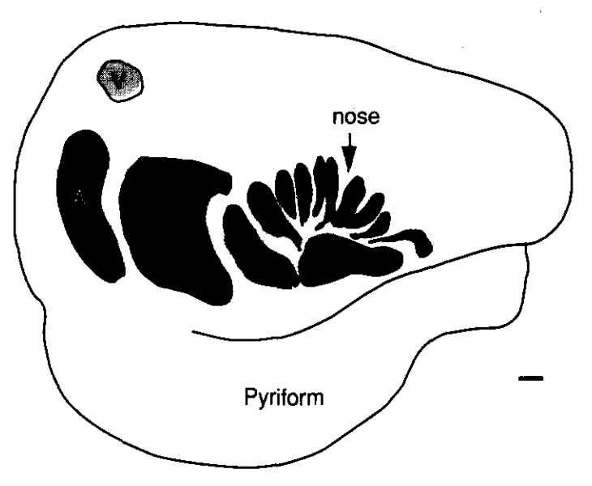
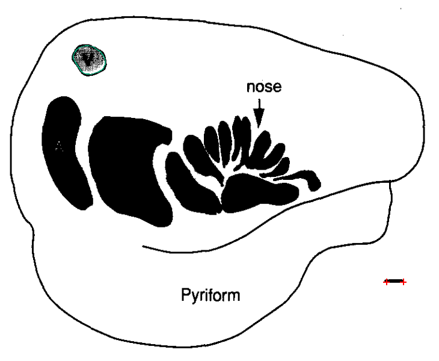
ImageJ ROIs · Calibrated TIFF
| Field | mm² | % neocortex | Status |
|---|
| V | 2.388 | NA | provisional; anatomical review required |
| other primary-field totals | NA | NA | not_measurable |
fig03A — not reported
Dense tracing on 4 pixels/PDF point source rendering. Anatomical interpretation provisional; hide overlay in the precision review to inspect the printed stroke.

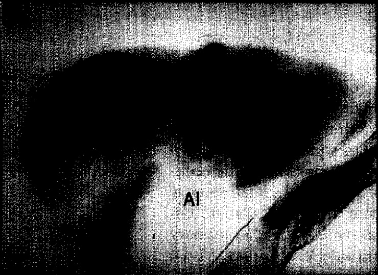
Calibrated TIFF
| Field | mm² | % neocortex | Status |
|---|
| VI | NA | NA | not_measurable |
| SI | NA | NA | not_measurable |
| AI | NA | NA | not_measurable |
fig03B — not reported
Dense tracing on 4 pixels/PDF point source rendering. Anatomical interpretation provisional; hide overlay in the precision review to inspect the printed stroke.

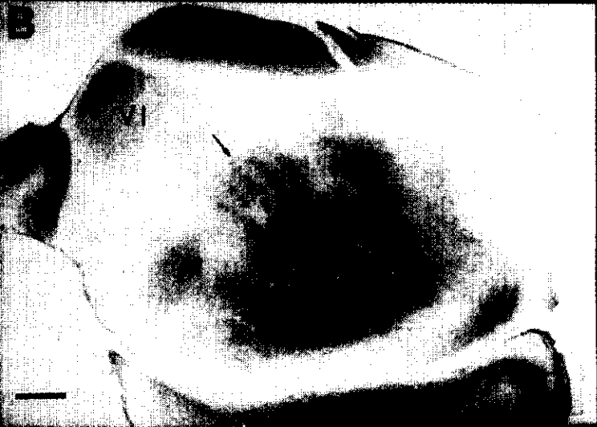
Calibrated TIFF
| Field | mm² | % neocortex | Status |
|---|
| VI | NA | NA | not_measurable |
| SI | NA | NA | not_measurable |
| AI | NA | NA | not_measurable |
fig03C — not reported
Dense tracing on 4 pixels/PDF point source rendering. Anatomical interpretation provisional; hide overlay in the precision review to inspect the printed stroke.

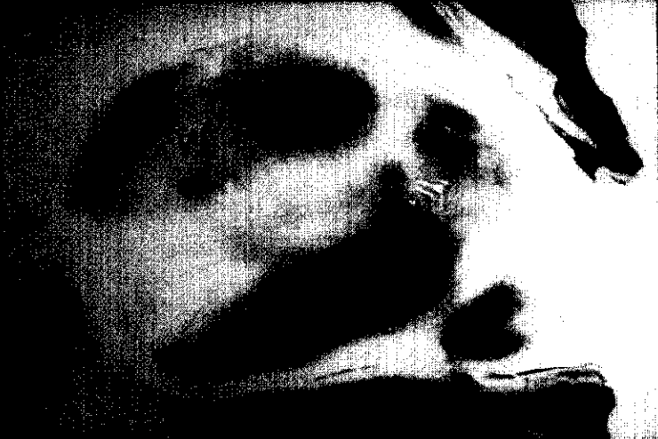
Calibrated TIFF
| Field | mm² | % neocortex | Status |
|---|
| VI | NA | NA | not_measurable |
| SI | NA | NA | not_measurable |
| AI | NA | NA | not_measurable |
fig03D — not reported
Dense tracing on 4 pixels/PDF point source rendering. Anatomical interpretation provisional; hide overlay in the precision review to inspect the printed stroke.

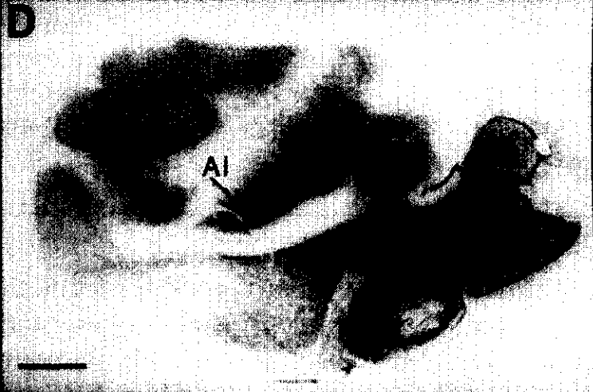
Calibrated TIFF
| Field | mm² | % neocortex | Status |
|---|
| VI | NA | NA | not_measurable |
| SI | NA | NA | not_measurable |
| AI | NA | NA | not_measurable |
fig03E — not reported
Dense tracing on 4 pixels/PDF point source rendering. Anatomical interpretation provisional; hide overlay in the precision review to inspect the printed stroke.
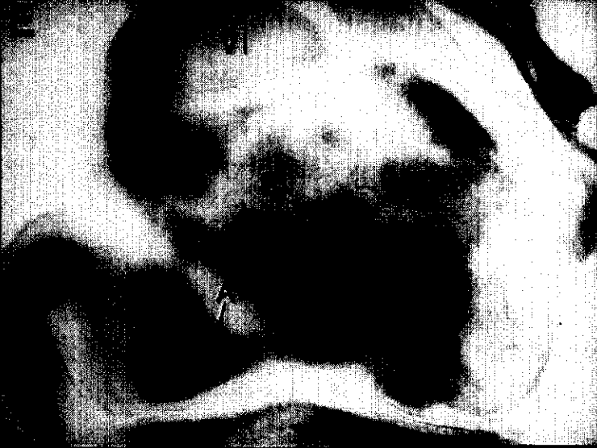

Calibrated TIFF
| Field | mm² | % neocortex | Status |
|---|
| VI | NA | NA | not_measurable |
| SI | NA | NA | not_measurable |
| AI | NA | NA | not_measurable |
fig03F — not reported
Dense tracing on 4 pixels/PDF point source rendering. Anatomical interpretation provisional; hide overlay in the precision review to inspect the printed stroke.
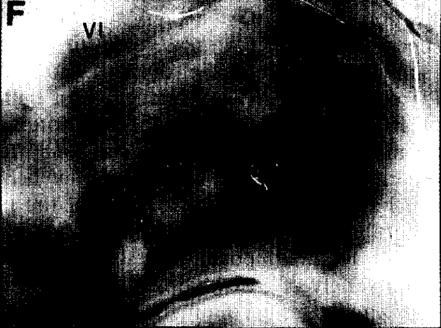

Calibrated TIFF
| Field | mm² | % neocortex | Status |
|---|
| VI | NA | NA | not_measurable |
| SI | NA | NA | not_measurable |
| AI | NA | NA | not_measurable |
fig04A — not reported
Dense tracing on 4 pixels/PDF point source rendering. Anatomical interpretation provisional; hide overlay in the precision review to inspect the printed stroke.
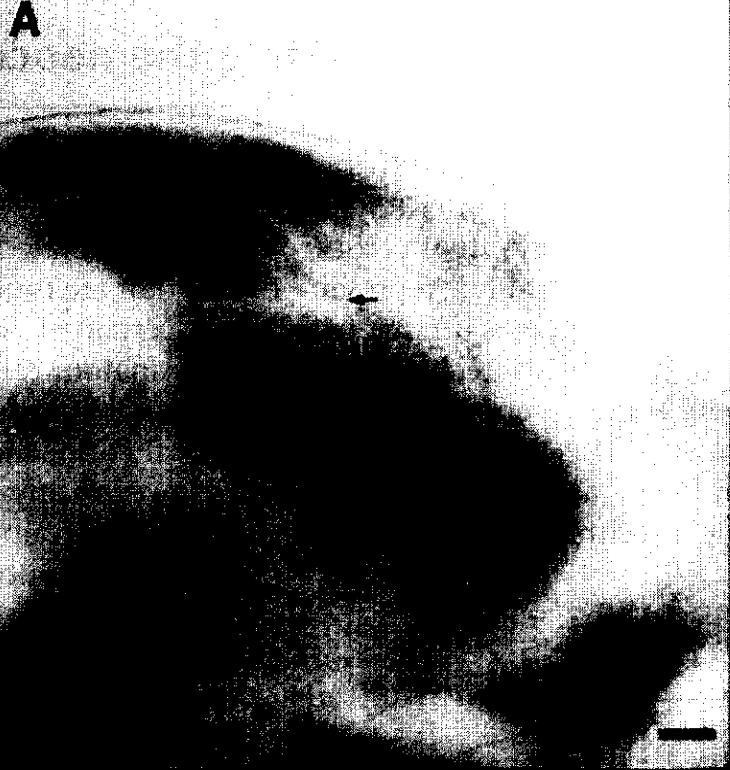

Calibrated TIFF
| Field | mm² | % neocortex | Status |
|---|
| SI | NA | NA | not_measurable |
fig04B — not reported
Dense tracing on 4 pixels/PDF point source rendering. Anatomical interpretation provisional; hide overlay in the precision review to inspect the printed stroke.
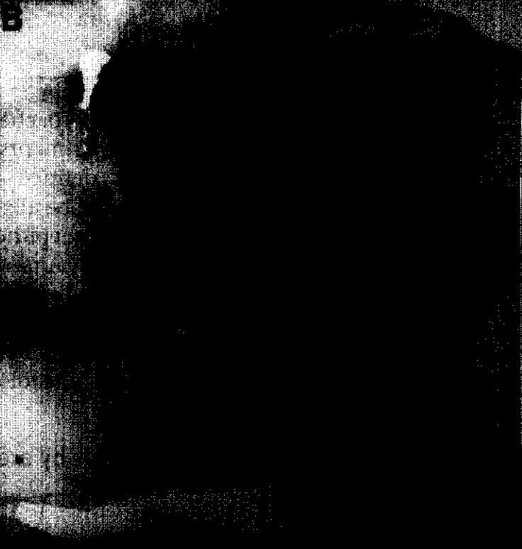

Calibrated TIFF
| Field | mm² | % neocortex | Status |
|---|
| SI | NA | NA | not_measurable |
fig04C — not reported
Dense tracing on 4 pixels/PDF point source rendering. Anatomical interpretation provisional; hide overlay in the precision review to inspect the printed stroke.
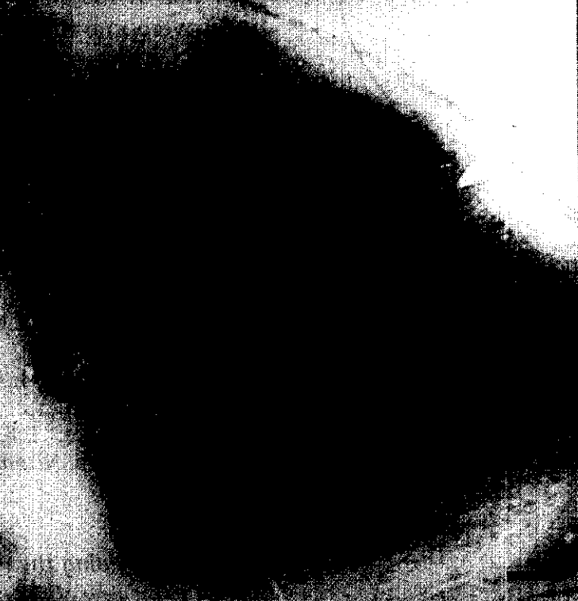

Calibrated TIFF
| Field | mm² | % neocortex | Status |
|---|
| SI | NA | NA | not_measurable |
fig04D — not reported
Dense tracing on 4 pixels/PDF point source rendering. Anatomical interpretation provisional; hide overlay in the precision review to inspect the printed stroke.

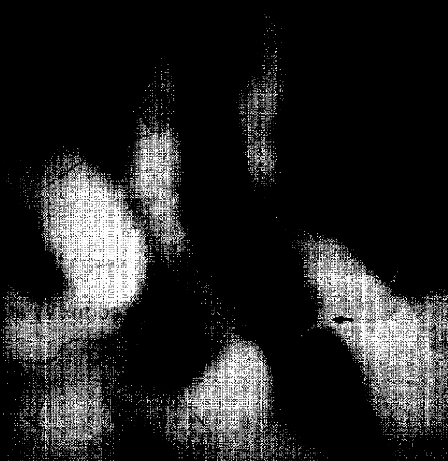
Calibrated TIFF
| Field | mm² | % neocortex | Status |
|---|
| SI | NA | NA | not_measurable |
All-figure source assessment
Krubitzer_1995: 7 numbered figures assessed; 31 field/fragment measurements. Saved observations, where present, are provisional. No certified complete-neocortex denominator is available.
Figure inventory · Methods and limits · Measurements · Complete-field absolute-area summary
Figure 1 all — digitized_provisional
Cross-species composite illustrations. 20 October 2026 missing-region actions: 26 saved field/component observations across 5 views for this figure. Affected per-field decisions are documented in missing_region_actions_2026-10-20.md. Approximate/illustrative/repeated observations do not become independent complete-field animals.
PDF page3; review preview only.
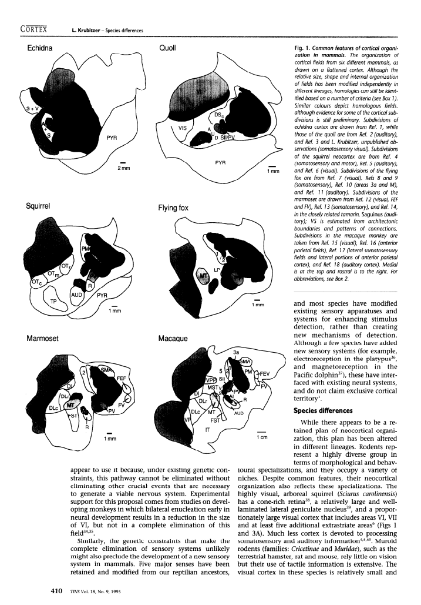
Figure 2 all — digitized_provisional
Specialized-species comparative cartoons. Full-dataset recheck 2026-10-16: 5 field/component observations across 3 saved view(s). Each perimeter reviewed separately; repeated views and illustrative summaries are retained without adding independent animals. Source-limited totals remain explicit NA. Map IDs: fig02_ghost_bat, fig02_platypus, fig02_star_nosed_mole.
PDF page4; review preview only.
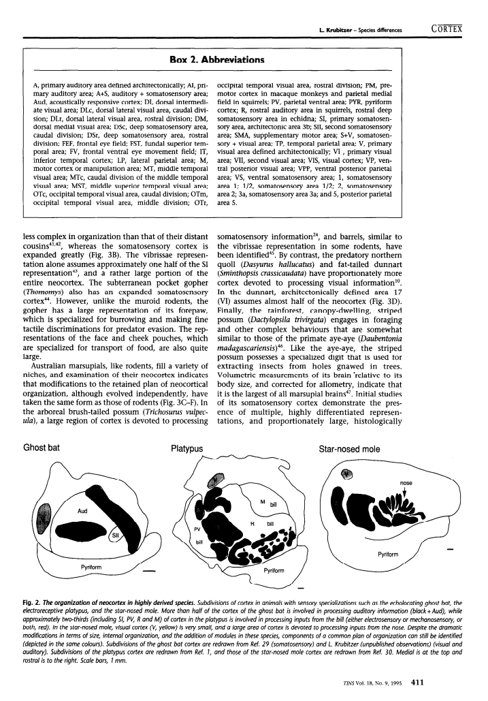
Figure 3 A — assessed_not_measurable
squirrel cortical photograph. Dark field fills merge in this scan; no reproducible complete VI/SI/AI perimeters. Preserved crop and explicit NA rows.
Main maps: fig03A
PDF page5; review preview only.
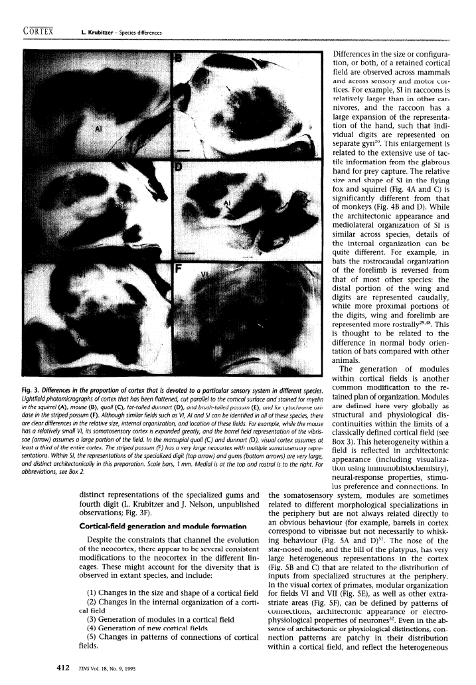
Figure 3 B — assessed_not_measurable
mouse cortical photograph. Dark field fills merge in this scan; no reproducible complete VI/SI/AI perimeters. Preserved crop and explicit NA rows.
Main maps: fig03B
PDF page5; review preview only.
Figure 3 C — assessed_not_measurable
quoll cortical photograph. Dark field fills merge in this scan; no reproducible complete VI/SI/AI perimeters. Preserved crop and explicit NA rows.
Main maps: fig03C
PDF page5; review preview only.
Figure 3 D — assessed_not_measurable
fat-tailed dunnart cortical photograph. Dark field fills merge in this scan; no reproducible complete VI/SI/AI perimeters. Preserved crop and explicit NA rows.
Main maps: fig03D
PDF page5; review preview only.
Figure 3 E — assessed_not_measurable
brush-tailed possum cortical photograph. Dark field fills merge in this scan; no reproducible complete VI/SI/AI perimeters. Preserved crop and explicit NA rows.
Main maps: fig03E
PDF page5; review preview only.
Figure 3 F — assessed_not_measurable
striped possum cortical photograph. Dark field fills merge in this scan; no reproducible complete VI/SI/AI perimeters. Preserved crop and explicit NA rows.
Main maps: fig03F
PDF page5; review preview only.
Figure 4 A — assessed_not_measurable
flying fox cortical photograph. No reproducible complete SI perimeter in the saturated photograph; preserve source and NA.
Main maps: fig04A
PDF page6; review preview only.
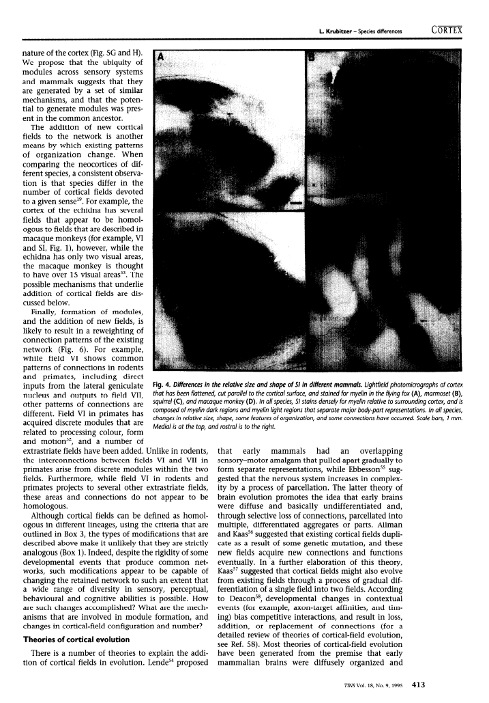
Figure 4 B — assessed_not_measurable
marmoset cortical photograph. No reproducible complete SI perimeter in the saturated photograph; preserve source and NA.
Main maps: fig04B
PDF page6; review preview only.
Figure 4 C — assessed_not_measurable
squirrel cortical photograph. No reproducible complete SI perimeter in the saturated photograph; preserve source and NA.
Main maps: fig04C
PDF page6; review preview only.
Figure 4 D — assessed_not_measurable
macaque cortical photograph. No reproducible complete SI perimeter in the saturated photograph; preserve source and NA.
Main maps: fig04D
PDF page6; review preview only.
Figure 5 all — assessed_excluded
Cortical modules. Modules and saturated photographs do not supply complete field envelopes.
PDF page8; review preview only.
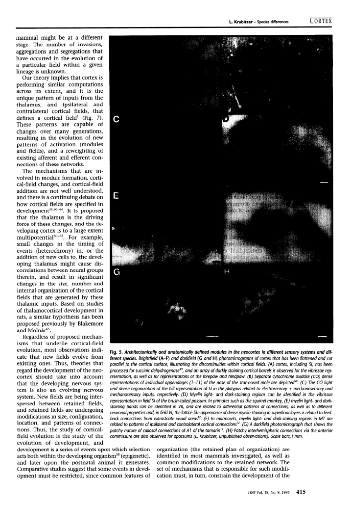
Figure 6 all — assessed_excluded
Connectivity illustrations. Projected cartoons of connections; no planar specimen field-area geometry.
PDF page9; review preview only.
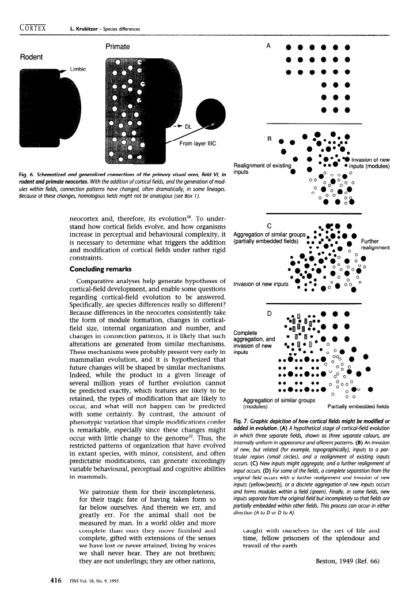
Figure 7 all — assessed_excluded
Developmental network model. Network diagram without cortical surface geometry.
PDF page9; review preview only.
Enlarged source-toggle precision review